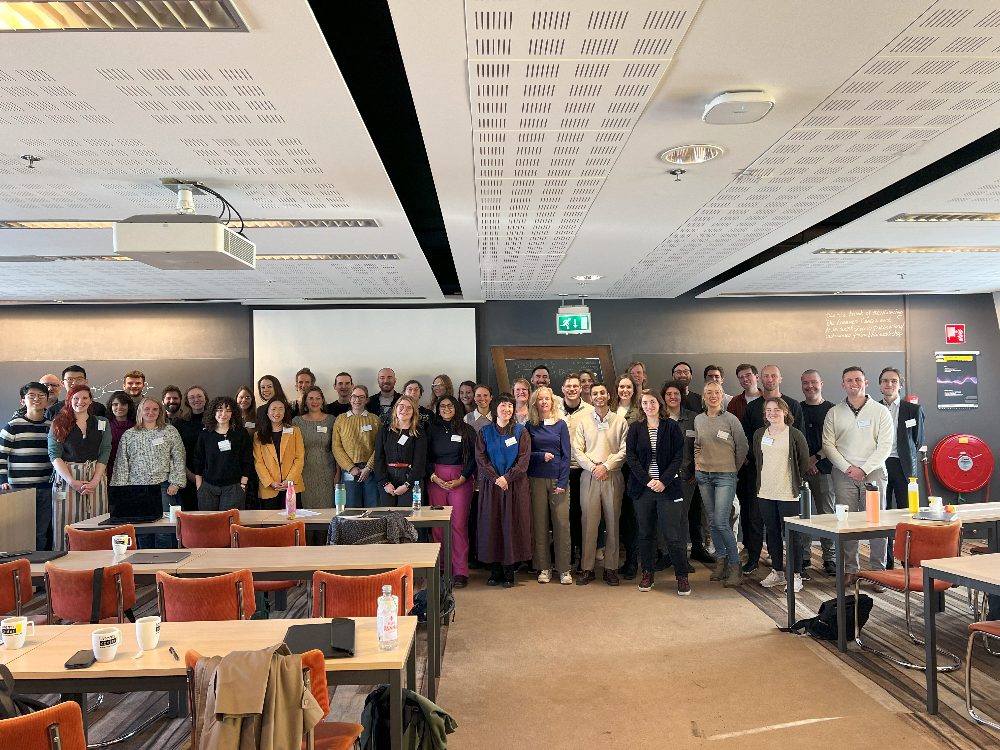
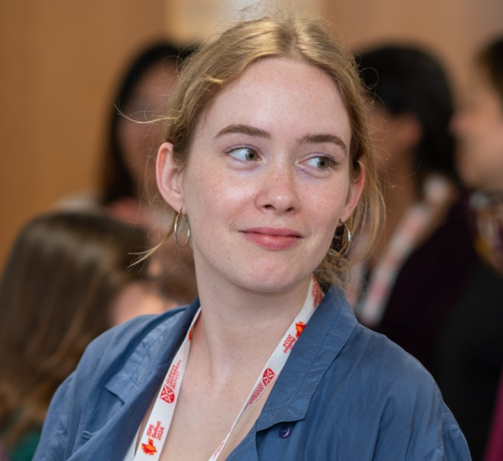
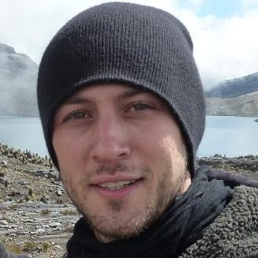
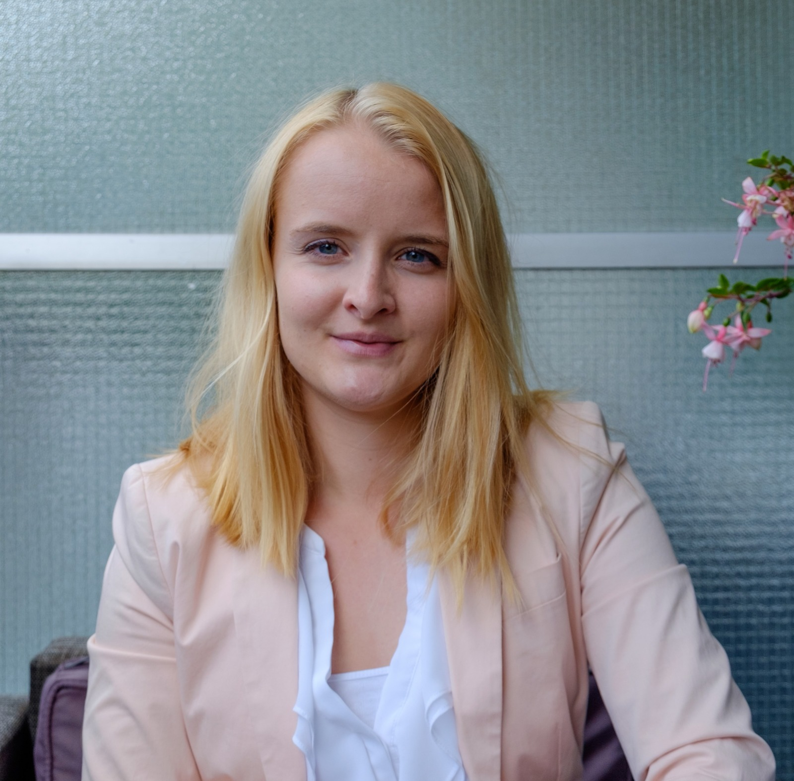
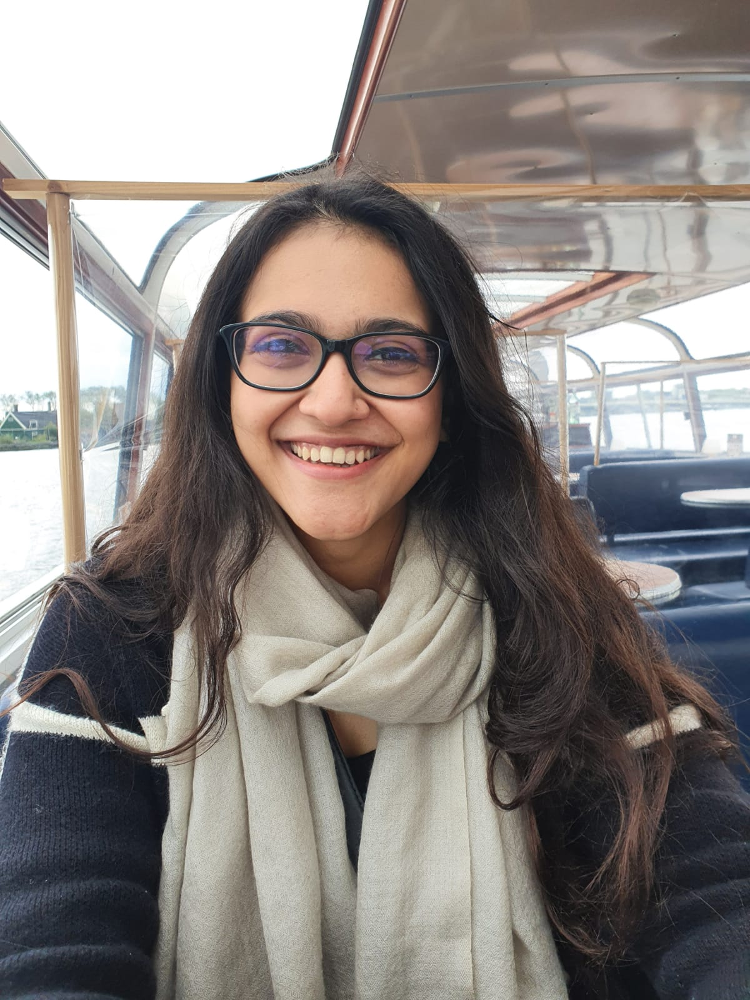
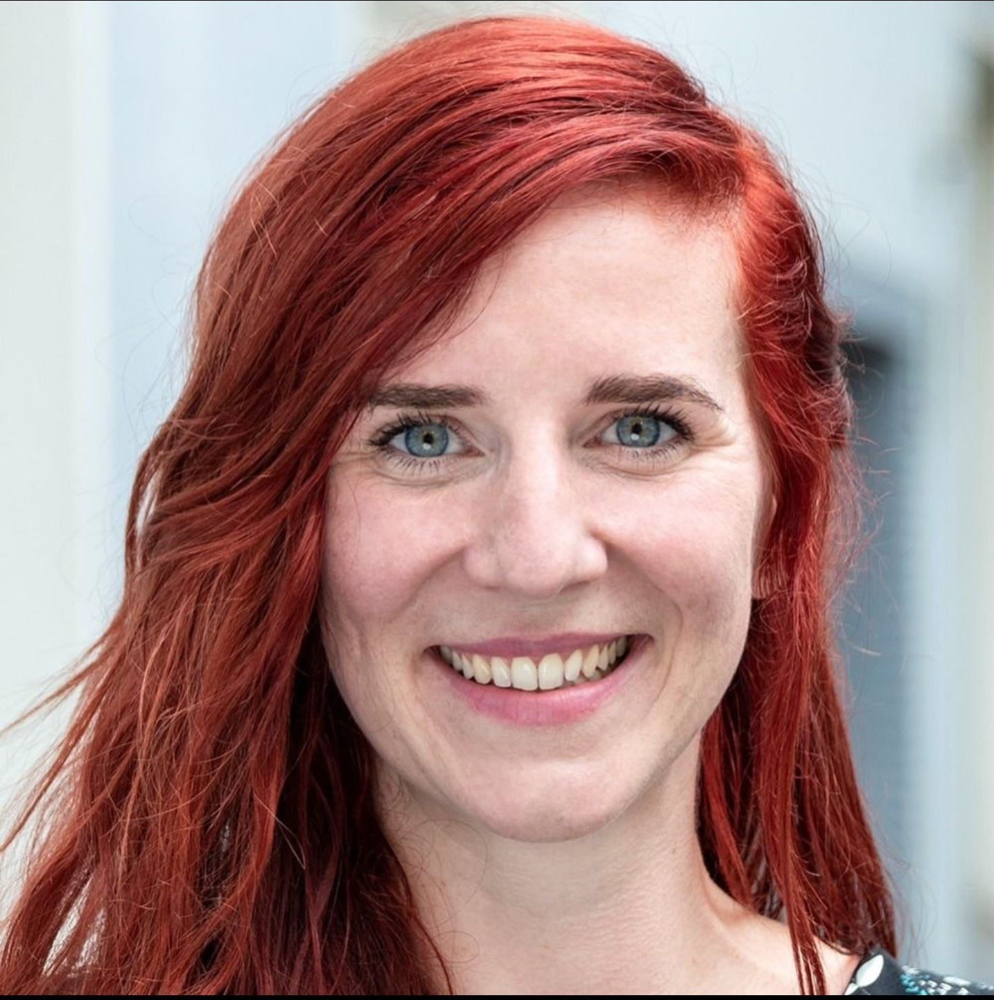
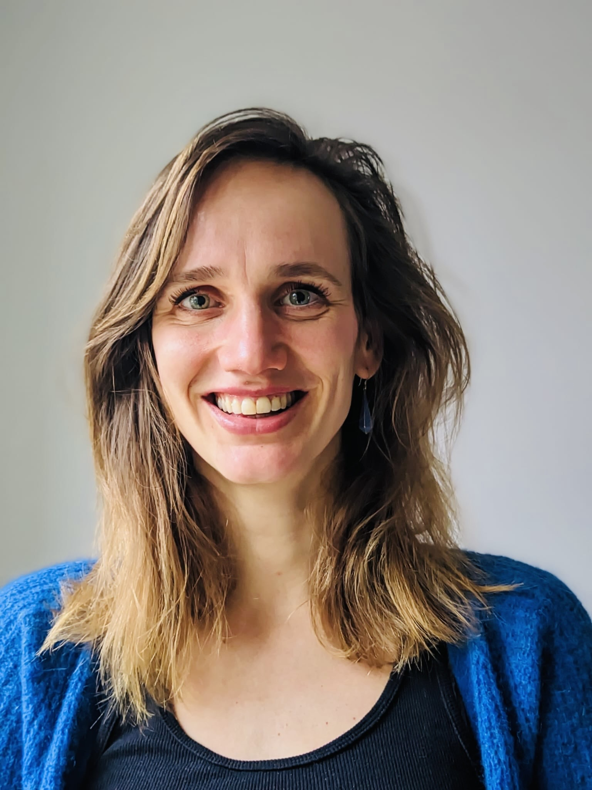
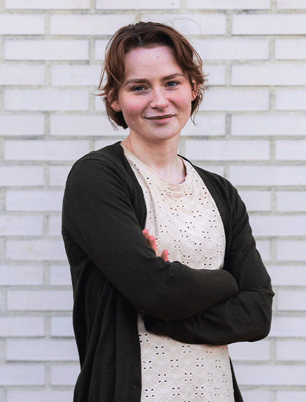

People
Below is a group photo taken at the MITNB Lorentz Center Workshop in Leiden (2024).

More information about individual members is soon to come.

Leonie Schorrlepp

Jonas Haslbeck
Leonie V.D.E. Vogelsmeier
Jingmeng Cui

Marie Stadel

Eiko Fried

Suhaavi Kochhar

Xinkai Du
Joseph Maimone

Dominique Maciejewski

Omid V. Ebrahimi

Olivia Kirtley
Jessica Fritz
Björn Siepe
Shirley Wang

Charlotte Vrijen

Marieke Schreuder

Guðrún Guðmundsdóttir
Laura Bringmann

Marieke A. Helmich
×

Research Interests
Contact & Links
<div class="contact-links" id="modalContacts">
<!-- Contact links will be populated here -->
</div>
</div>
</div>